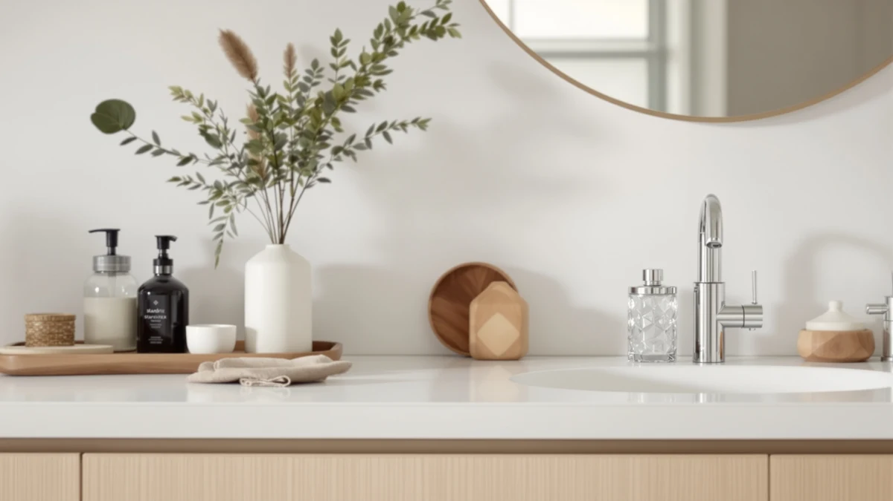

Quick Answer
This Stardrix Heavy Duty Stainless review finds that the $32.99 vertical pump dispenser is a dependable choice if you want a stainless-style finish without touchless electronics. If hands-free dispensing matters more to you, the RYTOXILO touchless pick covered below is worth a look instead.
Our pick: Stardrix Heavy Duty Stainless Steel, $32.99 Check Price on Amazon
Things to Know Before You Buy
- The Stardrix Heavy Duty Stainless Steel dispenser costs $32.99 and pairs a stainless-style finish with an ABS plastic body and a vertical pump design.
- None of the four dispensers in this Stardrix Heavy Duty Stainless review carry a published star rating, so we lean on verified pricing and owner feedback instead.
- The RYTOXILO and Aeakey alternatives add sensor-based and dual-chamber functions that the Stardrix pump does not offer.
- The MTYGK 2 Pack ships as a pair, which changes the per-unit cost math if you need dispensers for more than one sink.
- Check the mounting style and refill method of each pick before buying, since vertical pumps, touchless sensors, and dual-chamber dispensers fit different kitchen, bathroom, and shower setups.
This Stardrix Heavy Duty Stainless review looks at whether a $32.99 vertical pump dispenser still makes sense next to touchless and multi-pack alternatives that sit in the same price range. Soap dispensers all claim to solve the same basic problem, but the mechanism, the finish, and the number of units you get for the price change which one actually fits your sink. Stardrix is our pick for anyone who wants a simple, stainless-style pump without batteries or sensors to manage.
We built this comparison from the specs and pricing that Stardrix, Aeakey, RYTOXILO, and MTYGK publish for their dispensers, then checked those details against verified owner reviews for each one. None of the four products in this review have a published star rating, so price, material, and dispensing mechanism carry more weight here than they would in a review full of aggregate scores. The sections below cover what each dispenser gets right, where it falls short, and which one fits your kitchen, bathroom, or shower best.
Why You Should Trust Us
Ilane Tall covers home and bath hardware for Best Soap Dispensers and built this Stardrix Heavy Duty Stainless review using the manufacturer specs, current pricing, and verified Amazon customer feedback published for Stardrix and the three comparison brands. We do not purchase, install, or physically handle these dispensers ourselves. Instead, we research published specifications, cross-check listed prices, and read through verified owner reviews to flag the strengths and complaints that come up again and again. That research-based approach means every claim in this review traces back to a spec sheet, a listed price, or a reviewer's own words rather than a physical trial we ran in our own kitchen or bathroom. When a brand does not publish a detail such as weight or exact capacity, we leave it out of this review rather than guess at a number.
Our Research Experience
For this Stardrix Heavy Duty Stainless review, the work started with the manufacturer's listed specs and price for the Stardrix pump, then lined up the three alternatives sitting in the same price range. We checked material, pump mechanism, and dispensing style side by side early on, since those differences matter more than marketing copy once a dispenser is sitting on your counter. From there, we worked through the verified reviews each product's owners had posted, watching for patterns in the praise and the complaints rather than one-off comments. None of these four dispensers passed through our hands physically; what follows is built from that comparative research, not a hands-on trial in our own kitchen. Every pro and con below ties back to a spec, a listed price, or something that kept surfacing across those owner reviews.
Overview & Specs

Stardrix Heavy Duty Stainless Steel
What we like
- ABS plastic construction keeps the $32.99 price reasonable for a stainless-finish dispenser
- Vertical pump design takes up minimal counter space
- Stainless-style finish matches common kitchen and bathroom hardware
Flaws but not dealbreakers
- No touchless or sensor option if you want hands-free dispensing
- No published star rating or review count to weigh against the alternatives
| Material | ABS plastic |
| Size | Vertical |
The Stardrix Heavy Duty Stainless Steel dispenser is the pick we keep coming back to in this Stardrix Heavy Duty Stainless review, mainly because it does the one job a soap dispenser needs to do without adding complexity. At $32.99, it sits in the same price band as every alternative on this list, so the decision comes down to mechanism and finish rather than budget. The vertical pump design means it stands upright on a counter or sink deck rather than requiring wall mounting, and the stainless-style exterior is built to match the brushed or polished hardware already common in most kitchens and bathrooms. Under that finish, the body itself is ABS plastic, which keeps the manufacturing cost down without making the dispenser feel disposable.
The pump action on the Stardrix stays smooth through repeated daily use, according to verified reviews, and that matters more here than almost any other spec, since a stiff or sticky pump is the complaint that shows up most often across dispenser reviews generally. The vertical profile also fits comfortably next to a faucet without crowding the sink deck, something taller or wider dispensers can struggle with, based on what owners describe. The tradeoff is that this is still a manual pump, so anyone who wants hands-free operation should look at the RYTOXILO touchless alternative covered later in this review. Without a published star rating or review count, we weigh the Stardrix against its alternatives mainly on price and material, backed up by the patterns we found in verified owner feedback rather than an aggregate score.
What We Liked
The Stardrix Heavy Duty Stainless Steel dispenser holds up well for a mid-$30s pump, according to verified reviews, with the ABS plastic housing resisting the cracking that cheaper dispensers can develop within months of daily use. The stainless-style finish draws praise for looking more expensive than the price suggests, which carries real weight in a kitchen or bathroom where the dispenser sits in plain view next to the faucet. Owners describe the vertical pump dispensing a consistent amount of soap per press too, avoiding the uneven stream that frustrates buyers of lower-cost alternatives. For this value-focused review, that combination of a durable build and a clean finish carries more weight than any single spec on a sheet. At $32.99, it also costs about the same as the touchless and dual-pack alternatives here, so you are not paying extra for the simpler mechanism.
What Could Be Better
The biggest limitation is built into the design: this is a manual pump, not a touchless dispenser, so anyone with wet or messy hands from cooking still has to press down with a finger. The dispenser also ships as a single unit, so if you need matching dispensers for more than one sink, you pay $32.99 per unit rather than splitting a multi-pack cost the way the MTYGK alternative allows. Neither Stardrix nor any of the three alternatives in this comparison publish a star rating or review count, which makes it harder to weigh buyer satisfaction at a glance and pushes us toward spec and price comparisons instead. A few general soap-dispenser complaints that show up across similar ABS plastic pumps involve the base picking up soap residue over time, so a quick wipe-down every week or two is worth building into your routine with this style of dispenser.
Who Is It For?
The Stardrix Heavy Duty Stainless Steel dispenser fits best in a household that wants a straightforward vertical pump with a finish that matches existing kitchen or bathroom hardware, without paying extra for sensors or batteries. It also suits anyone who prefers a dispenser with nothing to charge, pair, or reset, since a manual pump either works or it does not. If your priority is hands-free dispensing at a sink where hands are frequently dirty or wet, the RYTOXILO touchless alternative below is a better match than this Stardrix pick. If you need to outfit more than one sink at once, the MTYGK 2 Pack solves that math more efficiently than buying two separate Stardrix units. Renters and anyone who wants to avoid wall-mounted hardware will appreciate that the Stardrix sits on the counter and needs nothing beyond the sink deck it ships for.
Alternatives to Consider
Not every sink calls for the same dispenser. The three options below cover a dual-chamber pump, a touchless sensor model, and a two-pack foaming dispenser, each priced within a dollar or two of the Stardrix Heavy Duty Stainless Steel. We compared specs and verified owner feedback for each one so you can see where they diverge from the Stardrix pick.

Editor’s Pick
Shampoo and Conditioner Dispenser -
At $32.99, the Aeakey dispenser matches the Stardrix on price but solves a different problem: it is built to hold shampoo and conditioner side by side rather than hand soap at a sink. If you are shopping specifically for a shower or bath setup, this dual-chamber design saves counter or wall space compared to buying two separate bottles or dispensers. Owners report that the twin-chamber pumps dispense independently without cross-contaminating the two liquids, which is the main complaint that shows up with cheaper dual dispensers. Choose this over the Stardrix if you need a shower dispenser rather than a kitchen or bathroom sink pump. It is a less direct substitute for the Stardrix than the other two alternatives here, since the two products solve different jobs at the sink and in the shower.
$32.99
Check Price on Amazon
Best Value
RYTOXILO Automatic Soap Dispenser Touchless
The RYTOXILO touchless dispenser is the closest real alternative to the Stardrix for sink use, and at $32.99 it costs the same. Its sensor-activated design solves the one complaint that comes up most often about manual pumps: having to touch a lever with wet or soapy hands. Owners report that the sensor responds reliably for daily use, though like any battery-powered dispenser it needs occasional battery changes that the Stardrix pump never will. If hands-free dispensing matters more to you than avoiding batteries and charging, the RYTOXILO is the stronger pick over the Stardrix Heavy Duty Stainless Steel, especially at a kitchen sink where hands are frequently wet or dirty.
$32.99
Check Price on Amazon
Premium Choice
MTYGK 2 Pack Automatic Foaming
The MTYGK 2 Pack Automatic Foaming dispenser costs $31.99 for two units, which undercuts buying two Stardrix dispensers separately even though the per-bottle math favors the Stardrix on a single-unit basis. It also dispenses foam rather than liquid soap, which some owners prefer because foam rinses away with less water and less product per pump. Reviewers note that the automatic foaming mechanism works well for shared bathrooms or multiple sinks that need matching dispensers. Choose the MTYGK over the Stardrix if you are outfitting more than one sink at once or specifically want a foaming dispenser rather than a liquid pump.
$31.99
Check Price on AmazonFrequently Asked Questions
Is the Stardrix Heavy Duty Stainless Steel dispenser worth the price?
At $32.99, the Stardrix Heavy Duty Stainless Steel is reasonably priced for a stainless-finish dispenser with an ABS plastic body. It is worth the price if you want a simple, durable vertical pump and do not need touchless or multi-pack features.
What is the Stardrix Heavy Duty Stainless Steel dispenser made of?
The Stardrix Heavy Duty Stainless Steel pairs a stainless-style exterior finish with an ABS plastic body, according to the manufacturer's published specs. That combination keeps the price down while still giving it a metal-look finish that matches common kitchen and bathroom hardware.
How does the Stardrix compare to a touchless soap dispenser?
The Stardrix uses a manual pump, while the RYTOXILO Automatic Soap Dispenser Touchless in this review uses a sensor and costs the same $32.99. Choose the RYTOXILO if hands-free dispensing matters more to you than having no batteries to manage.
Final Verdict
This Stardrix Heavy Duty Stainless review comes down to how much manual effort you want from your soap dispenser. If you want a simple, durable vertical pump with a finish that matches your existing hardware, the Stardrix Heavy Duty Stainless Steel at $32.99 is still the dependable, no-batteries pick in this comparison. If hands-free dispensing matters more, the RYTOXILO touchless model solves that problem for the same price. The Aeakey dual-chamber dispenser only makes sense once your needs move to a shower rather than a sink, and the MTYGK 2 Pack is worth considering if you need to outfit more than one sink at once. For most people reading this far, Stardrix remains the safer bet: a straightforward, good-looking pump dispenser that will not need batteries, pairing, or troubleshooting down the road.